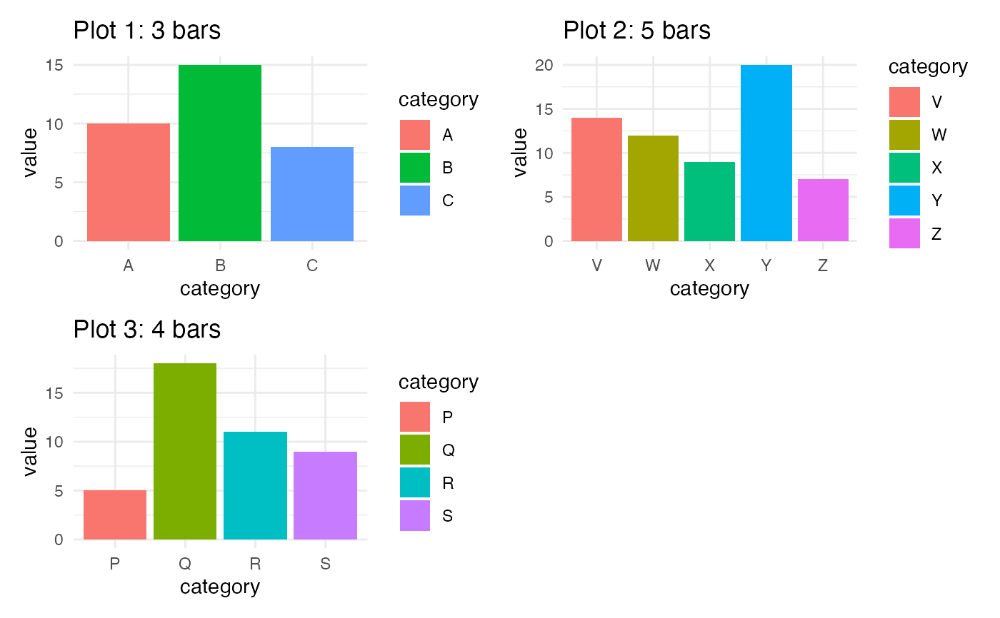
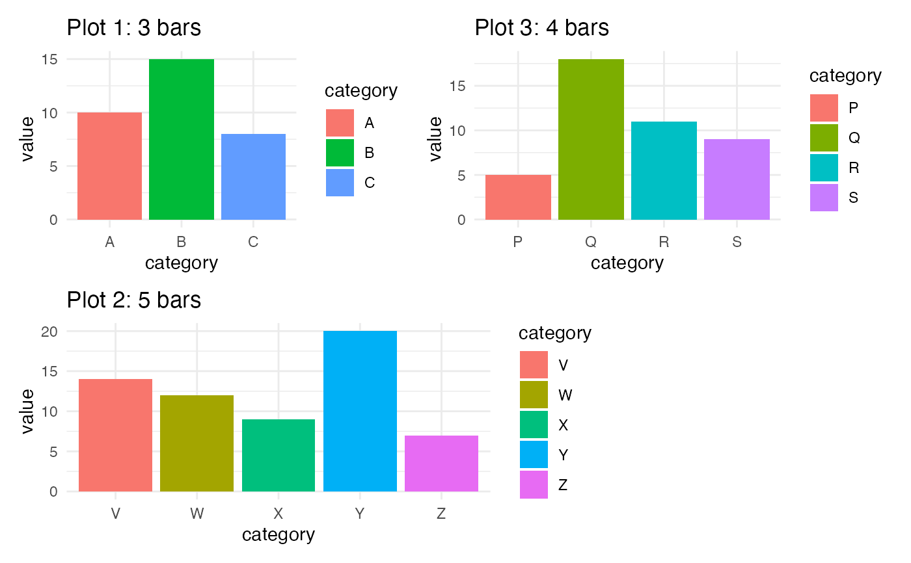

Plot a List of ggplot2 Barplots as a Grid with with Uniform Width of the Bars
Source: R/uniform_barwidth_grid.R
uniform_barwidth_grid.RdPlot a List of ggplot2 Barplots as a Grid with with Uniform Width of
the Bars
Examples
# Load ggplot2
library(ggplot2)
library(patchwork)
# Barplot 1 ----
data1 <- data.frame(
category = c("A", "B", "C"),
value = c(10, 15, 8)
)
plot1 <- ggplot(data1, aes(x = category, y = value, fill = category)) +
geom_bar(stat = "identity") +
ggtitle("Plot 1: 3 bars") +
theme_minimal()
# Barplot 2 ----
data2 <- data.frame(
category = c("W", "X", "Y", "Z", "V"),
value = c(12, 9, 20, 7, 14)
)
plot2 <- ggplot(data2, aes(x = category, y = value, fill = category)) +
geom_bar(stat = "identity") +
ggtitle("Plot 2: 5 bars") +
theme_minimal()
# Barplot 3 ----
data3 <- data.frame(
category = c("P", "Q", "R", "S"),
value = c(5, 18, 11, 9)
)
plot3 <- ggplot(data3, aes(x = category, y = value, fill = category)) +
geom_bar(stat = "identity") +
ggtitle("Plot 3: 4 bars") +
theme_minimal()
# Plot originals with patchwork
wrap_plots(plot1, plot2, plot3, nrow = 2)

# Plot to get uniform bar widths
uniform_barwidth_grid(list(plot1, plot2, plot3),
level.count = c(3, 5, 4), nrow = 2, ncol = 2)
#> Warning: data length is not a multiple of split variable
#> Warning: data length is not a multiple of split variable
